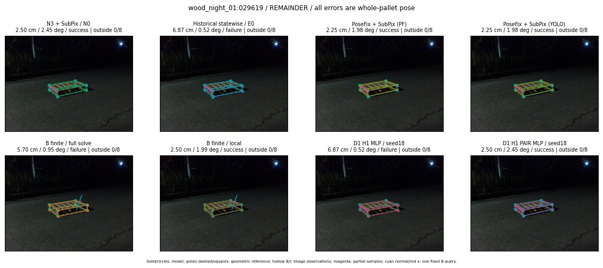

Whole-pallet pose errors; reference is a fixed geometric annotation, not certified physical GT.

Scores are uncalibrated logits. N0 retention is a numerical pose alias; it differs from H0 none or B fallback. B/I and profiles in baseline/B panels are original observations; L panels use new D1 observations. Only one deterministic supported B query is shown in a thumbnail; full support counts are below. Grey privacy rectangles edit the display copy only and are unrelated to O states; all observations were measured on original pixels. Thumbnails use JPEG quality85; detailed scientific panels are PNG.
| Method | Whole pose / cm, deg | Actual source | Selected ID | Score | Archived candidates | Eligible | N0 retained | H0 none | Fallback | Finite profiles |
|---|---|---|---|---|---|---|---|---|---|---|
| Raw YOLO + F | 1.57 cm / 0.91 deg / success | OTHER | None | N/A | N/A | N/A | False | N/A | None | N/A |
| N3 + SubPix / N0 | 2.50 cm / 2.45 deg / success | N0 | None | N/A | N/A | N/A | True | N/A | None | N/A |
| Historical statewise / E0 | 6.87 cm / 0.52 deg / failure | E0_REGENERATED | None | N/A | N/A | N/A | False | N/A | False | N/A |
| PoseFix raw | 1.46 cm / 1.27 deg / success | OTHER | None | N/A | N/A | N/A | False | N/A | None | N/A |
| PoseFix + SubPix (PF) | 2.25 cm / 1.98 deg / success | OTHER | None | N/A | N/A | N/A | False | N/A | False | historical support records 9; finite audit N/A |
| PoseFix + SubPix (YOLO) | 2.25 cm / 1.98 deg / success | OTHER | None | N/A | N/A | N/A | False | N/A | False | historical support records 9; finite audit N/A |
| Historical L, seed18 | 2.50 cm / 2.45 deg / success | N0 | N0 | N/A | 64 | 54 | True | True | True | N/A |
| Historical B fixed bank | 6.87 cm / 0.52 deg / failure | OTHER | LOGGED/G13/ORIGINAL_WD/outline_consider/37 | N/A | N/A | N/A | False | N/A | False | N/A |
| Historical B full | 3.40 cm / 0.95 deg / success | OTHER | NEW/B/ORIGINAL_WD/h0/LOGGED/G13/ORIGINAL_WD/outline_consider/37/PROPOSED_NATIVE_YAW_0 | N/A | N/A | N/A | False | N/A | False | N/A |
| Historical edge full | 45.04 cm / 14.44 deg / failure | OTHER | NEW/edge/ORIGINAL_WD/h0/LOGGED/G13/ORIGINAL_WD/outline_consider/37/PROPOSED_NATIVE_YAW_0 | N/A | N/A | N/A | False | N/A | False | N/A |
| Historical AB full | 3.40 cm / 0.95 deg / success | OTHER | NEW/AB/ORIGINAL_WD/h0/LOGGED/G13/ORIGINAL_WD/outline_consider/37/PROPOSED_NATIVE_YAW_0 | N/A | N/A | N/A | False | N/A | False | N/A |
| B finite / fixed bank | 6.87 cm / 0.52 deg / failure | OTHER | LOGGED/G13/ORIGINAL_WD/outline_consider/37 | N/A | N/A | N/A | False | N/A | False | 32/32 |
| B finite / full solve | 5.70 cm / 0.95 deg / failure | OTHER | NEW_FINITE/B/ORIGINAL_WD/h0/LOGGED/G13/ORIGINAL_WD/outline_consider/37/PROPOSED_NATIVE_YAW_0 | N/A | N/A | N/A | False | N/A | False | 32/32 |
| B finite / local | 2.50 cm / 1.99 deg / success | OTHER | NEW_FINITE/B/ORIGINAL_WD/h0/N0_LOCAL_SAME_PHYSICAL_POSE/ORIGINAL_WD | N/A | N/A | N/A | False | N/A | False | 32/32 |
| Edge finite / full solve | 14.15 cm / 2.79 deg / failure | OTHER | NEW_FINITE/edge/ORIGINAL_WD/h0/LOGGED/G13/ORIGINAL_WD/outline_consider/37/PROPOSED_NATIVE_YAW_0 | N/A | N/A | N/A | False | N/A | False | 32/32 |
| D0 H0 MLP / seed18 | 2.50 cm / 2.45 deg / success | N0 | N0 | 3.5869388580322266 | 37 | 27 | True | True | True | N/A |
| D0 H0 MLP / seed19 | 2.50 cm / 2.45 deg / success | N0 | N0 | 4.133905410766602 | 37 | 27 | True | True | True | N/A |
| D0 H0 MLP / seed20 | 2.50 cm / 2.45 deg / success | N0 | N0 | 1.4652758836746216 | 37 | 27 | True | True | True | N/A |
| D0 H1 MLP / seed18 | 6.87 cm / 0.52 deg / failure | OTHER | G13/ORIGINAL_WD/endpoint/37 | -0.7011124491691589 | 37 | 27 | False | False | False | N/A |
| D0 H1 MLP / seed19 | 6.87 cm / 0.52 deg / failure | OTHER | G13/ORIGINAL_WD/endpoint/37 | -0.8560147285461426 | 37 | 27 | False | False | False | N/A |
| D0 H1 MLP / seed20 | 6.87 cm / 0.52 deg / failure | OTHER | G13/ORIGINAL_WD/endpoint/37 | -1.8225106000900269 | 37 | 27 | False | False | False | N/A |
| D1 H0 MLP / seed18 | 2.50 cm / 2.45 deg / success | N0 | N0 | 8.329134941101074 | 37 | 27 | True | True | True | N/A |
| D1 H0 MLP / seed19 | 2.50 cm / 2.45 deg / success | N0 | N0 | 7.707951068878174 | 37 | 27 | True | True | True | N/A |
| D1 H0 MLP / seed20 | 2.50 cm / 2.45 deg / success | N0 | N0 | 7.3661675453186035 | 37 | 27 | True | True | True | N/A |
| D1 H1 MLP / seed18 | 6.87 cm / 0.52 deg / failure | OTHER | G13/ORIGINAL_WD/endpoint/37 | -0.05565503239631653 | 37 | 27 | False | False | False | N/A |
| D1 H1 MLP / seed19 | 6.87 cm / 0.52 deg / failure | OTHER | G13/ORIGINAL_WD/endpoint/37 | -0.23342595994472504 | 37 | 27 | False | False | False | N/A |
| D1 H1 MLP / seed20 | 6.87 cm / 0.52 deg / failure | OTHER | G13/ORIGINAL_WD/endpoint/37 | -0.564935564994812 | 37 | 27 | False | False | False | N/A |
| D1 H1 ROLE AFFINE / seed18 | 6.87 cm / 0.52 deg / failure | OTHER | G13/ORIGINAL_WD/endpoint/37 | 0.29819896817207336 | 37 | 27 | False | False | False | N/A |
| D1 H1 ROLE AFFINE / seed19 | 2.50 cm / 2.45 deg / success | N0 | N0 | -0.027745429426431656 | 37 | 27 | True | False | False | N/A |
| D1 H1 ROLE AFFINE / seed20 | 6.87 cm / 0.52 deg / failure | OTHER | G13/ORIGINAL_WD/endpoint/37 | -0.06068271026015282 | 37 | 27 | False | False | False | N/A |
| D1 H1 PAIR MLP / seed18 | 2.50 cm / 2.45 deg / success | N0 | N0 | -1.2197237014770508 | 37 | 2 | True | False | False | N/A |
| D1 H1 PAIR MLP / seed19 | 2.50 cm / 2.45 deg / success | N0 | N0 | -1.1381056308746338 | 37 | 2 | True | False | False | N/A |
| D1 H1 PAIR MLP / seed20 | 2.50 cm / 2.45 deg / success | N0 | N0 | -0.863534688949585 | 37 | 2 | True | False | False | N/A |
| D1 H1 PAIR ROLE AFFINE / seed18 | 2.50 cm / 2.45 deg / success | N0 | N0 | -0.5605031847953796 | 37 | 2 | True | False | False | N/A |
| D1 H1 PAIR ROLE AFFINE / seed19 | 2.50 cm / 2.45 deg / success | N0 | N0 | -0.6424214243888855 | 37 | 2 | True | False | False | N/A |
| D1 H1 PAIR ROLE AFFINE / seed20 | 2.50 cm / 2.45 deg / success | N0 | N0 | -0.42804989218711853 | 37 | 2 | True | False | False | N/A |
| Regenerated common E0 | 6.87 cm / 0.52 deg / failure | E0_REGENERATED | E0_REGENERATED | N/A | N/A | N/A | False | N/A | False | N/A |